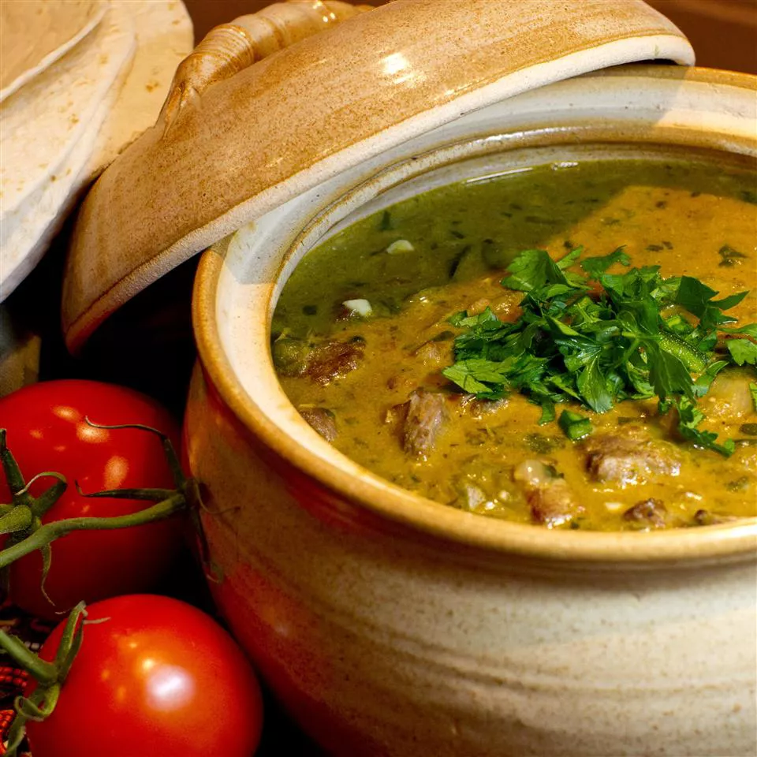

Mile High Green Chili

Easy to make, but tasted nothing like Chicken Parm. It was just pasta, pieces of chicken, cheese and pasta sauce. Boring.
Ingredients
- 4 fresh tomatillos - husked, peeled, and halved
- 3 Anaheim chile peppers - seeded and halved
- 3 jalapeno peppers - seeded and halved lengthwise
- 1 medium onion, halved
- 1 green bell pepper, seeded and halved lengthwise
- 2 tablespoons olive oil, divided
- salt and ground black pepper to taste
- 1 ½ pounds pork shoulder, cut into 1-inch chunks
- ½ (12 fluid ounce) can or bottle lager-style beer
- 2 tomatoes, chopped
- 4 cloves garlic, chopped
- 2 tablespoons chopped fresh oregano
- 1 tablespoon chopped fresh parsley
- 1 tablespoon ground cumin
- 1 teaspoon chili powder
- 1 beef bouillon cube
- 4 ounces cream cheese at room temperature
Steps
- Preheat the oven to 425 degrees F (220 degrees C).
- Arrange the halved tomatillos, Anaheim chiles, jalapeños, onion, and bell pepper on a baking sheet. Drizzle vegetables with 1 tablespoon olive oil and sprinkle with salt.
- Roast vegetables in the preheated oven until they begin to show brown spots, about 30 minutes. Allow to cool, then chop vegetables into bite-sized pieces.
- Heat remaining 1 tablespoon olive oil in a large skillet over high heat. Add pork and fry until browned, seasoning with salt and black pepper as it cooks, about 12 minutes. Transfer pork to a slow cooker; stir in roasted vegetables. Mix in beer, tomatoes, garlic, oregano, parsley, cumin, chili powder, and bouillon. Cover and cook on Low until pork is tender, 4 to 6 hours.
- About 1/2 hour before serving, place cream cheese into a bowl and stir in about 1 tablespoon of the chili liquid until thoroughly combined. Continue stirring in chili broth, a tablespoon at a time, until the cream cheese is almost a liquid. Stir cream cheese mixture back into the chili.